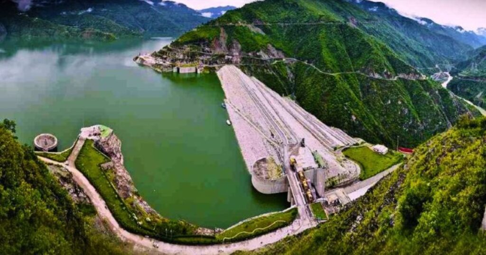
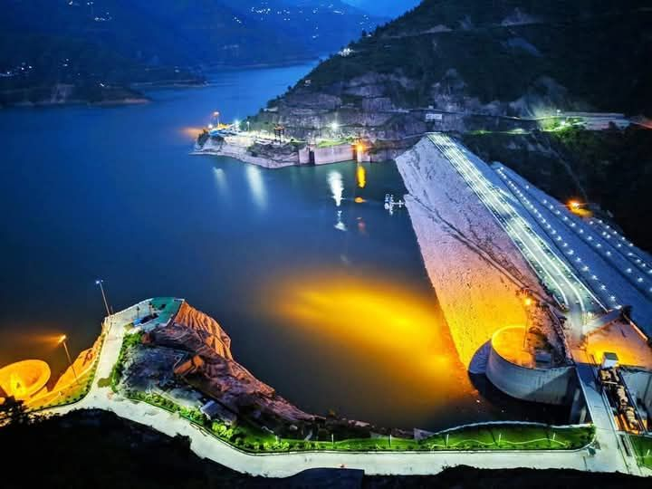
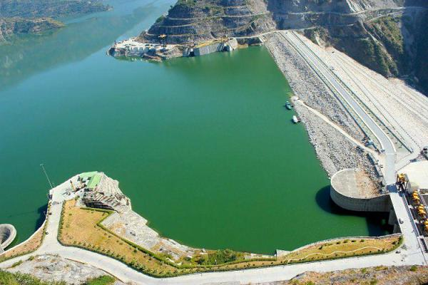

Tehri Dam, located in the Tehri Garhwal district of Uttarakhand, is one of the tallest dams in the world and the highest in India, standing at an impressive height of 260.5 meters. Built on the confluence of the Bhagirathi and Bhilangana rivers, this massive earth and rock-fill dam forms the stunning Tehri Lake — a vast reservoir surrounded by majestic Himalayan landscapes. Constructed by the Tehri Hydro Development Corporation (THDC), the dam plays a crucial role in hydroelectric power generation, irrigation, and drinking water supply for millions of people, including major cities like Delhi and Uttar Pradesh regions. Beyond its engineering significance, Tehri has transformed into a scenic destination where nature meets modern infrastructure.
The serene Tehri Lake has emerged as a hub for adventure tourism and water sports, offering activities like jet skiing, boating, kayaking, parasailing, and even scuba diving in crystal-clear waters. The submerged Old Tehri town beneath the lake adds a layer of historical and emotional depth to the place, reminding visitors of the region’s transformation. Surrounded by lush hills and snow-clad peaks in the distance, Tehri Dam offers breathtaking sunrise and sunset views, making it a perfect blend of thrill, tranquility, and natural beauty — an offbeat yet unforgettable destination in Uttarakhand.
March to June offers pleasant weather (15–30°C), ideal for sightseeing and water sports; September to November provides clear skies, cool breeze, and stunning lake views after monsoon. Avoid July–August due to heavy rainfall and landslides. Winters (December–February) are cold but peaceful, with fewer tourists and misty Himalayan vibes — perfect for a calm getaway.
Tehri Lake for boating, jet skiing, kayaking & parasailing, panoramic viewpoints around the dam, Tehri Lake Festival (adventure & culture), submerged Old Tehri town stories, nearby Koti Colony for scenic stays, and mesmerizing sunrise-sunset views over the reservoir — perfect for photography, adventure, and relaxation.
Carry sunscreen and sunglasses due to strong reflection from water, book water sports in advance during peak season, wear comfortable clothing for adventure activities, follow safety instructions strictly, visit early morning or evening for best views, and keep the environment clean — avoid littering this beautiful eco-sensitive zone.
"Where mighty rivers are harnessed beneath the watchful Himalayas, Tehri Dam stands as a symbol of human ingenuity and nature’s grandeur — a place where silent waters hold stories of the past, reflect the sky’s infinite beauty, and invite every traveler to witness power, peace, and perspective in one breathtaking view."